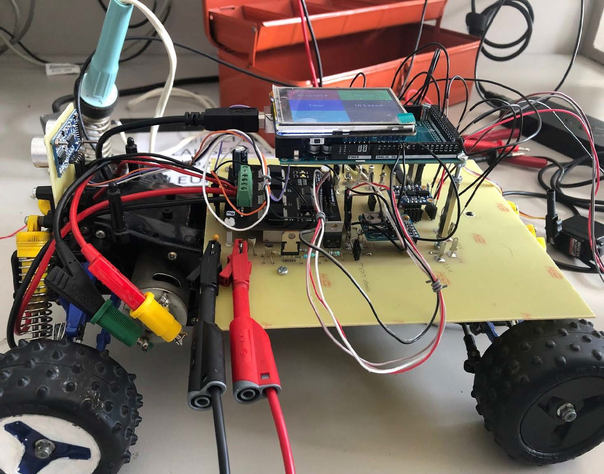
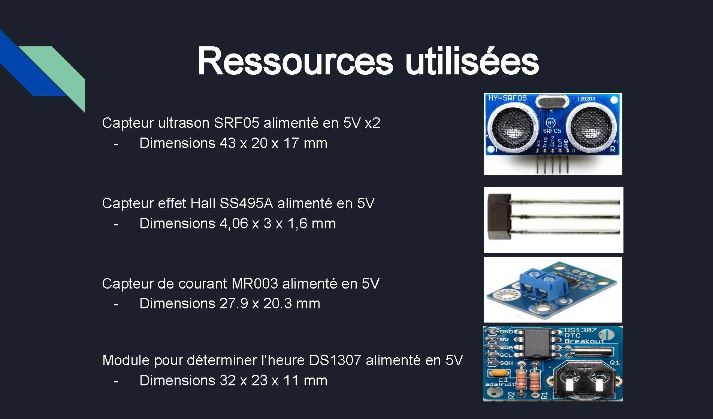
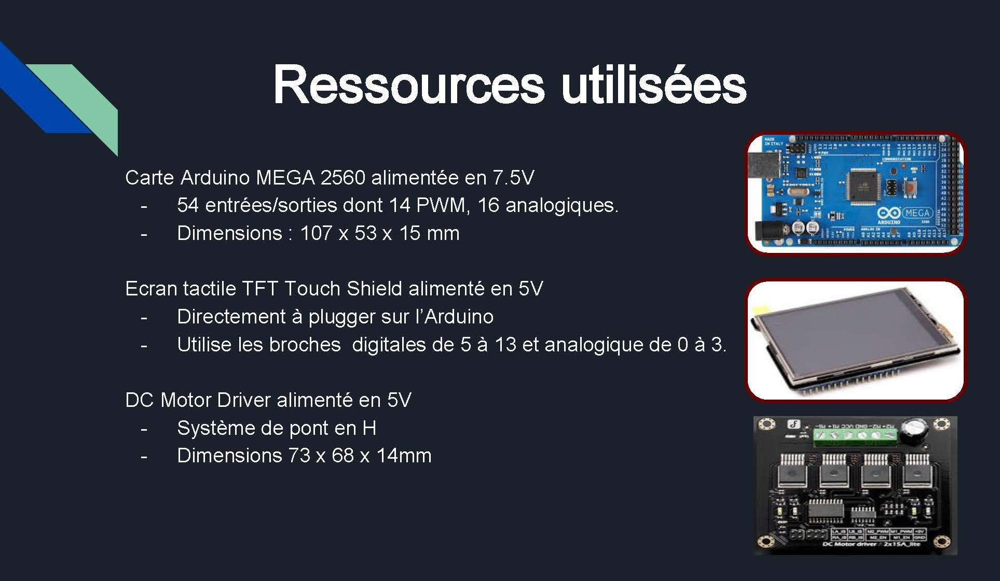
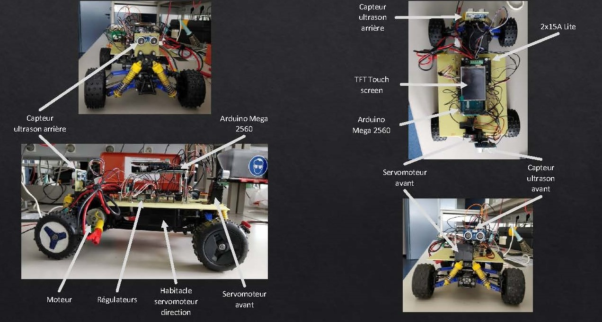
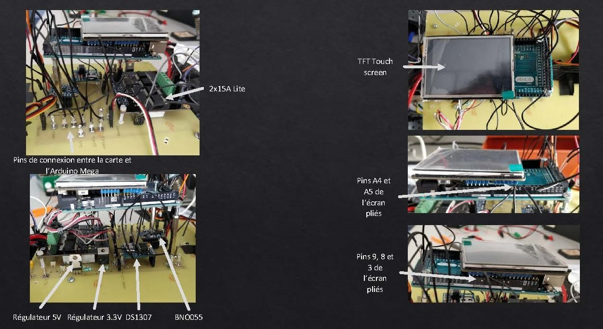
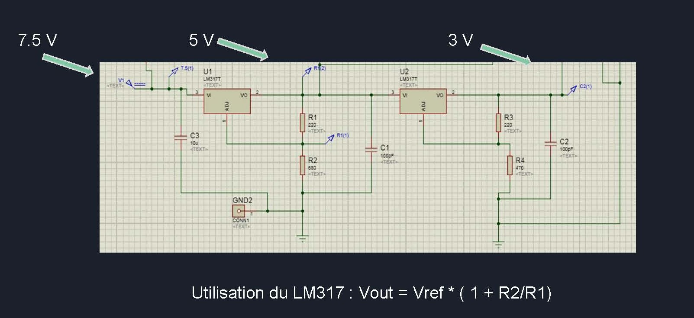
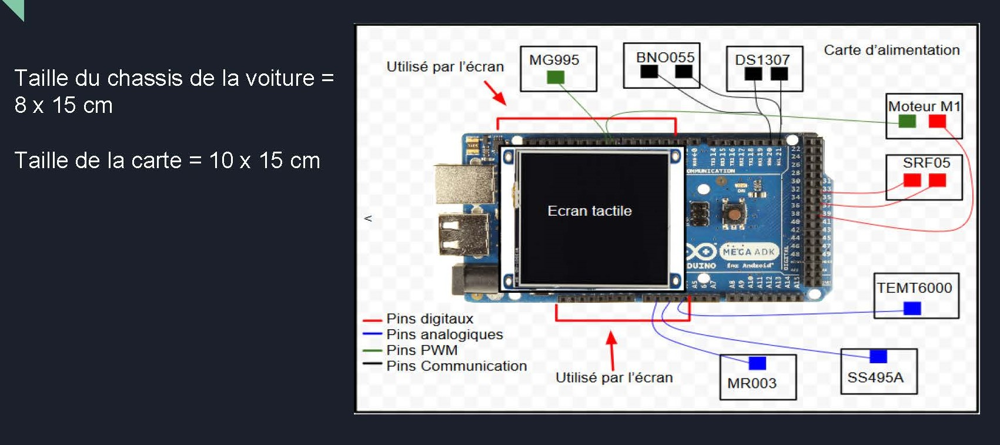

Project overview
The project was carried out by 4 students :
- My partner and I were in charge of the analog part of the project, more specifically the choice of sensors and the design of a power supply board to interconnect the available resources (microcontroller, drivers, etc.).
- Two other students dealt with the digital part of the project (sensor management on Arduino, creation of a user interface on an LCD screen).
Specifications and requirements
The idea was to equip the model with a car, so that it could move autonomously and display various information on a screen.
- The car must be able to take note of its environment.
- The car must be able to move.
- The car must be able to avoid obstacles on the road.
- The car must be equipped with a screen.
- The car must be able to display a compass on the screen.
Chosen solutions


Building the power supply board on proteus

Overall layout of the printed card board
